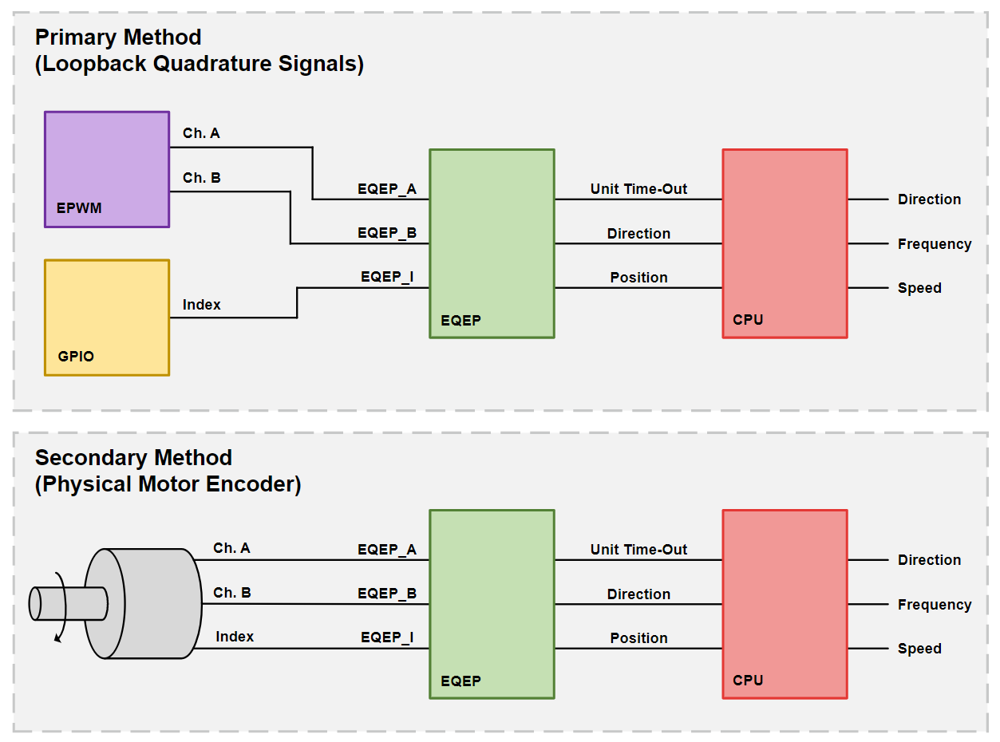

Enhanced Quadrature Encoder Pulse (eQEP) Lab#
The objective of this lab is to gain familiarity with the Enhanced Quadrature Encoder Pulse (eQEP) module through a guided lab example. This lab will illustrate a common use-case of the eQEP module: connecting quadrature signals to the C2000 device and using the eQEP to calculate motor characteristics.
Solution#
All solutions are available
in the directory: <c2000ware_install_path>/training/device/<device_name>.
Introduction#
In this lab, an eQEP module will be used to calculate the position and speed of a motor encoder given a set of quadrature signals. The eQEP in this lab will be configured for a generic 1000-line incremental quadrature encoder, similar to the LVSERVOMTR offered by TI. The quadrature signals will be generated using the device’s ePWM and GPIO pins at a constant frequency. Users with access to a motor encoder may also connect the quadrature signals from their motor encoder to the C2000 device to further evaluate the performance of the eQEP module.

The channel A, channel B, and index quadrature signals will be fed into the C2000 device’s eQEP module, which will be configured in quadrature-count mode. The eQEP module will determine the direction of motion using the channel A and channel B signals. The position counter within the eQEP will keep track of the position of the motor encoder with respect to the zero index position. The eQEP module will issue periodic interrupts to the CPU using Unit time-out events.
Within the application code for this lab, there will be an interrupt handler that will be responsible for calculating the frequency of the encoder signals using characteristics from the eQEP module. The speed of the motor will be calculated using this frequency. The final output of all of these calculations and motor characteristics can be viewed in the Watch Variables panel of Code Composer Studio.
Lab Setup#
Hardware Setup#
You will need the following hardware for this lab:
A C2000 controlCARD or LaunchPad with the supplied USB cable.
Jumper cables.
Oscilloscope (optional).
LVSERVOMTR or similar encoder (optional).
Use the supplied USB cable to connect the USB Micro or USB Mini Type-B connector to the board. Connect the USB Standard Type-A connector into your computer USB port. You should see some LEDs light up on your board. In addition to powering the board, a JTAG communication link is also established between the device and Code Composer Studio. A 1000-line encoder is recommended and will allow you to generate dynamic quadrature signals for the eQEP module.
Software Setup#
The following software will need to be installed on your computer:
Import Empty Project#
Our first task is to import an empty project to our Code Composer Studio (CCS) workspace. The basic instructions are as follows:
Open CCS and go to Project→Import CCS Projects. A new window should appear. Ensure that the Select search-directory option is activated.
Click the Browse button and select the
[C20000ware_Install_dir]/training/device/[device]/empty_labdirectory.Note that the default Windows [C20000ware_Install_dir] is
C:/ti/c2000/C2000Ware_4_xx_xx_xx.Under Discovered Projects, you should now see the
lab_[board]_[device]project. Select the appropriate project for either the control card or the launchpad.

Click Finish to import and copy the
lab_[board]_[device]project into your workspace.Rename the project and source files appropriately.
Task 1 - Setting up the GPIOs#
Enable GPIO Pin Names in SysConfig
Enabling the ‘GPIO Pin Labels’ option within SysConfig can make it easier to choose the desired device pins. To enable device pin names, perform the following steps:
In the top right of SysConfig, click the ellipses icon (…)
Open thePreferences & Actionsmenu
UnderDevice Pin Label, select and enable the option next to ‘Device pin name’
Press the exit icon (X) in the top right to close the ‘Preferences & Actions’ menu
We will begin this lab exercise by configuring the GPIO within the
c2000.syscfg file of the project. Double-click the c2000.syscfg file within
the project to open the SysConfig GUI. This lab requires a single dedicated
GPIO which will represent the index signal from a quadrature encoder.
To initialize this GPIO within SysConfig, perform the following steps:
Add a GPIO by clicking the (+) icon next to ‘GPIO’ on the left pane
Set the name of the GPIO as ‘myGPIOIndex’
Set the GPIO Direction as ‘Pin is a GPIO output’
Ensure the Pin Type is set as ‘Push-pull output/floating input’
Initialize the GPIO pin to low by enabling the checkbox next to Write Initial Value and set the Initial Value to be ‘0: GPIO state is LOW’
Under PinMux, set the GPIO to be ‘GPIO2’
The state of this pin will be continually toggled within the program’s application code. The pin will pulse high for the length of a single encoder cycle every time the encoder disk makes a full rotation. In this lab, a single rotation occurs every 1000 pulses of EPWM1A and EPWM1B.
Task 2 - Initialize the EPWM Module#
The EPWM module will be used to generate the quadrature signals and is configured as two 2.5kHz PWM waveforms with 50% duty cycle that are offset 90° from each other. EPWM1A corresponds to quadrature channel A and EPWM1B corresponds to quadrature channel B. For more information on the ePWM module, please review the Control Peripherals module.
We will start by adding a PWM instance within Sysconfig by clicking on the (+) sign next to ‘EPWM’ within the left pane of Sysconfig. Name this EPWM instance ‘myQuadraturePWM’. Now that we have added an EPWM instance, we will configure the EPWM1 ‘Timebase’ submodule as follows:
Set High Speed Clock Divider to ‘Divide clock by 1’
Set Time Base Period to ‘24000’
Set Counter Mode to ‘Up - down - count mode’
The ‘Counter Compare’ submodule for EPWM1 will be as follows:
Set Counter Compare A (CMPA) to ‘12500’

Now, configure the ‘Action Qualifier’ submodule for EPWM1A as follows:
Enable Shadow Mode
Set Shadow Load Event to ‘Load when counter equals zero’
In Events to Configure for ePWMxA output, select ‘Time base counter up equals COMPA’ and ‘Time base counter down equals COMPA’
Set Time base counter up equals COMPA to ‘Set output pins to High’
Set Time base counter down equals COMPA to ‘Set output pins to Low’

Configure the ‘Action Qualifer’ submodule for EPWM1B as follows:
Enable Shadow Mode
Set Shadow Load Event to ‘Load when counter equals zero’
In Events to Configure for ePWMxB output, select ‘Time base counter equals period’ and ‘Time base counter equals zero’
Set Time base counter equals period to ‘Set output pins to High’
Set Time base counter equals zero to ‘Set output pins to Low’
Lastly, we need to configure the PinMux for EPWM1. Follow the steps below:
Set the EPWM Peripheral to be used as ‘EPWM1’
Configure the ‘EPWM_A’ pin to be ‘GPIO0’
Configure the ‘EPWM_B’ pin to be ‘GPIO1’
Task 3 - Configuring the EQEP Module#
Next, we will need to configure the EQEP module being used to process the quadrature signals. The exact configuration of the EQEP is dependent on the encoder being used. In this lab, the eQEP will be tuned to interact with a 1000-line encoder.
Add an instance of the EQEP module by clicking the ‘+’ icon next to EQEP. Name the EQEP instance ‘myEQEP1’. Configure the EQEP module as follows:
Configure the ‘Quadrature Decoder Unit’ as follows:
Ensure that Position Counter Source (QSRC) is set to Quadrature-clock mode’
Set Resolution to ‘1X Resolution: Count rising edge only’
Configure the ‘Position Counter and Control Unit’ as follows:
Ensure Position Counter Mode is set to ‘Reset position on index pulse’
Set Maximum Position to ‘3999’
Recall that the Position Counter operates at 4x the frequency of the quadrature signals. Thus, for a 1000-line encoder, the maximum position is
Under ‘Latch Mode,’ configure QEP Capture Latch Mode (QCLM) to latch ‘On unit time-out event’ and ensure that Index Event Latch (IEL) is configured to latch ‘On rising edge of index’
Configure Position Index Events (IEI) to trigger ‘On rising edge of index’
Toggle on the checkbox next to Enable Position Counter
Configure the ‘Edge Capture Unit’ as follows:
Toggle on the checkbox next to Enable Unit Timer
Set the Unit Timer Period to 1200000
Configure the ‘Interrupts’ as follows:
Ensure that the checkbox next to User Interrupt is enabled
Toggle on the checkbox next to Register Interrupt Handler
Toggle on the checkbox next to Enable Interrupt
Configure the Interrupt Sources as ‘Unit time-out’
For Emulation Mode, configure it to ‘Counter unaffected by suspend’ option
Configure the EQEP ‘PinMux’ as follows:
Since the QEPS signal is not being used, set Pinmux Use Case to ‘NO STROBE’
Set the EQEP Peripheral to be used as ‘EQEP1’
Configure the EQEP pins per the table below:
LaunchPad
Device |
EQEP_A GPIO |
EQEP_B GPIO |
EQEP Index |
|---|---|---|---|
F28379D |
20 |
40 |
99 |
F2838x |
n/a |
n/a |
n/a |
F28004x |
35 |
37 |
59 |
F28002x |
44 |
37 |
43 |
F28003x |
40 |
41 |
59 |
F280013x |
40 |
41 |
39 |
F280015x |
20 |
21 |
43 |
ControlCARD
Device |
EQEP_A GPIO |
EQEP_B GPIO |
EQEP Index |
|---|---|---|---|
F28379D |
20 |
21 |
23 |
F2838x |
20 |
21 |
23 |
F28004x |
40 |
57 |
31 |
F28002x |
40 |
41 |
23 |
F28003x |
20 |
21 |
23 |
F280013x |
20 |
21 |
23 |
F280015x |
Task 4 - Setup the .c file#
Next, we will move to the application code section of the lab. We will have to define any variables we are using throughout the project and setup the content within the main() function, which includes device initialization and the toggling of the GPIO index pin.
We begin by including the basic necessary libraries driverlib.h and device. h. Next, include the SysConfig-generated header file board.h. This should
already be included within the .c file by default.
//
// Included Files
//
#include "driverlib.h"
#include "device.h"
#include "board.h"
Next, we will define any constants which will be used throughout the
application code. ENCODER_SLOTS is a constant which denotes the number of
lines within the encoder wheel. UNIT_PERIOD defines the duration of the unit
period, which will be taken into consideration when calculating the frequency
of the quadrature signals.
//
// Defines
//
#define ENCODER_SLOTS 1000U // LVSERVOMTR is a 1000-line encoder
#define UNIT_PERIOD 10000U // Unit period in microseconds
Now, it is necessary to define the global constants which will be used in the
application code. This lab requires two variables which will be used to store
the position counter value received from the eQEP module.
currentEncoderPosition, frequency, speed, and direction all store their
respective values and can be added to the Watch Expressions tab within the
CCS debug view.
//
// Globals
//
uint32_t oldCount = 0; // stores the previous position counter value
uint32_t newCount = 0; // stores the new position counter value for frequency calculation
uint32_t currentEncoderPosition = 0; // stores the current encoder position
int32_t frequency = 0; // measured quadrature signal frequency of motor using eQEP
float32_t speed = 0.0f; // measured speed of motor in rpm
int32_t direction = 0; // direction of rotation of motor
Lastly, we define the contents within main() which includes device
initialization and peripheral setup. There will be an infinite while loop which
controls the logic for the myGPIOIndex signal.
//
// Main
//
void main(void)
{
//
// Initialize device clock and peripherals
//
Device_init();
//
// Disable pin locks and enable internal pull ups.
//
Device_initGPIO();
//
// Initialize PIE and clear PIE registers. Disables CPU interrupts.
//
Interrupt_initModule();
//
// Initialize the PIE vector table with pointers to the shell Interrupt
// Service Routines (ISR).
//
Interrupt_initVectorTable();
// Board Initialization
Board_init();
//
// Enable Global Interrupt (INTM) and realtime interrupt (DBGM)
//
EINT;
ERTM;
//
// Loop indefinitely
//
while(1)
{
//
// myGPIOIndex pulses high for 200 microseconds every 1000 encoder cycles (400,000 us)
//
DEVICE_DELAY_US(400000L);
GPIO_writePin(myGPIOIndex, 1);
DEVICE_DELAY_US(200L);
GPIO_writePin(myGPIOIndex, 0);
}
}
Task 5 - Setup the eQEP ISR#
The last step for setting up this lab will be configuring the interrupt handler. The interrupt handler will be triggered by the unit time-out signal, which periodically interrupts the CPU to perform position and speed calculations.
Under the EQEP module in SysConfig, collapse the EQEP Interrupt drop-down:
Rename the Interrupt Handler to a name of your choosing e.g., ‘INT_myEQEP1_ISR’.
This name must match the name of the ISR function within your application code.
Ensure the Enable Interrupt in PIE checkbox is checked.
Within your application code, declare the interrupt handler with the same name as defined in SysConfig.
//
// eqep1 ISR- interrupts once per ePWM period
//
__interrupt void
INT_myEQEP1_ISR(void)
{
}
Populate the interrupt handler within the code and algorithms necessary for calculating the frequency, speed, and position of the motor.
INT_myEQEP1_ISR(void)
{
//
// Save current encoder position value for monitoring
//
currentEncoderPosition = EQEP_getPosition(myEQEP1_BASE);
//
// Get position counter value latched on unit time-out event
//
newCount = EQEP_getPositionLatch(myEQEP1_BASE);
//
// Gets rotation direction of motor
//
direction = EQEP_getDirection(myEQEP1_BASE);
//
// Calculates the number of position in unit time based on direction
//
if (direction > 0 ){
if (newCount >= oldCount)
newCount = newCount - oldCount;
else
newCount = ((4 * ENCODER_SLOTS - 1) - oldCount) + newCount;
}
else {
if (newCount <= oldCount)
newCount = oldCount - newCount;
else
newCount = ((4 * ENCODER_SLOTS - 1) - newCount) + oldCount;
}
//
// Stores the current position count value to oldCount variable
//
oldCount = currentEncoderPosition;
//
// Calculate frequency and speed values
// frequency found by counting external input pulses for UNIT PERIOD
// speed derived from encoder frequency and encoder resolution
//
frequency = (newCount * (uint32_t)1000000U) / ((uint32_t)UNIT_PERIOD);
speed = (frequency * 60) / ((float)(4 * ENCODER_SLOTS));
//
// Clear interrupt flag and issue ACK
//
EQEP_clearInterruptStatus(myEQEP1_BASE,EQEP_INT_UNIT_TIME_OUT|EQEP_INT_GLOBAL);
Interrupt_clearACKGroup(INT_myEQEP1_INTERRUPT_ACK_GROUP);
}
This concludes the coding portion of this lab.
Running the Lab#
Build and Run Interactive Debug Session#
Ensure that the USB cable from your LaunchPad or controlCARD is connected to your computer. If you have a LaunchPad, right click on your project in the project explorer pane and click Properties→Build→C2000 Compiler→Predefined Symbols, add
_LAUNCHXL_F28XXXXXas a predefined symbol according to yourdevice.hheader file. Thedevice.hfile can be found in the<projectroot>/device/directory.Under the Build button, activate the CPU1_RAM build configuration. Use the CPU1_LAUNCHXL_RAM build configuration if it is available and if you are using a LaunchPad. Build the program and fix any compilation errors.
Create a new debug configuration. Set the target configuration to be
${workspace_loc:/<projectroot>/targetConfigs/TMS320F28XXXXX_LaunchPad.ccxml}if using a LaunchPad, else, use${workspace_loc:/<projectroot>/targetConfigs/TMS320F28XXXXX.ccxml}. Select the current project to be loaded to CPU1. Press Apply and close the window.Now we will start the debug session. Under the debug button, start the debug session using the new configuration. You should now see the debugging session open up and the debugger should have reached
main().Click the Resume button.
Primary Method (Loopback Quadrature Signals)#
Use jumper cables to create connections between GPIO0 and EQEP1_A, GPIO1 and EQEP1_B, and GPIO2 and EQEP1_I.
All LaunchPads feature dedicated EQEP header(s) located at the bottom of the device. When using these headers, ensure that the QEP Select Switch is in the correct configuration that routes the GPIO signals from the device to the dedicated EQEP header(s).
Add the following variables to theWatch Expressionstab.
currentEncoderPosition
frequency
speed
direction
Enable Continuous Refresh for the Expressions. Verify that the frequency, speed, and direction match the expected values.
The frequency value should be 4x the frequency of the configured ePWM signals. Since we configured the ePWM module to generate 2.5 kHz signals, we should expect to see the measured frequency be 10,000 Hz.
The speed value (in rotations per minute) is derived from the measured frequency.
The direction should be 1. A direction value of 1 indicates that the motor is moving in the forward direction, and a direction value of -1 indicates that the motor is moving in the reverse direction.
Observe that the value within currentEncoderPosition increments until it reaches the maximum position value, at which point the position resets to 0.
If a motor encoder is available, proceed to Secondary Method. Otherwise, terminate the debug session and close the project.
Secondary Method (Physical Motor Encoder)#
Pause the debug session and disconnect the jumper cables connecting the ePWM/ GPIO headers to the eQEP headers.
Connect the quadrature signals from the motor encoder to the eQEP signals. The required signals are EQEPA, EQPEB, EQEPI, 5V, and GND.
If performing this lab with a LaunchPad, it is recommended to utilize the dedicated eQEP headers located at the bottom of the device. The pinout of these headers corresponds to a standard 5-pin connector.
Resume the lab. Rotate the shaft of the motor and observe the values within the Watch Expressions tab changing according to the movements made to the motor.
Terminate the debug session and close the project. This concludes the lab assignment.
Full Solution#
The full solution to this lab exercise is included as part of the C2000Ware
SDK. Import the project from
<c2000ware_install_path>/training/device/<device_name>/control_peripherals/lab_qep.
Feedback
Please provide any feedback you may have about the content within C2000 Academy to: c2000_academy_feedback@list.ti.com